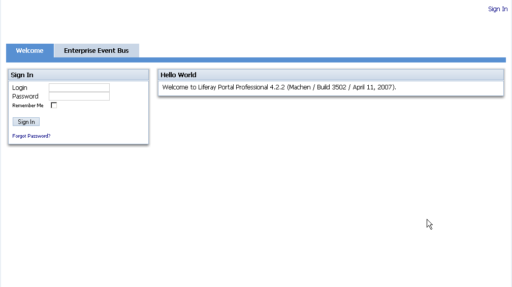
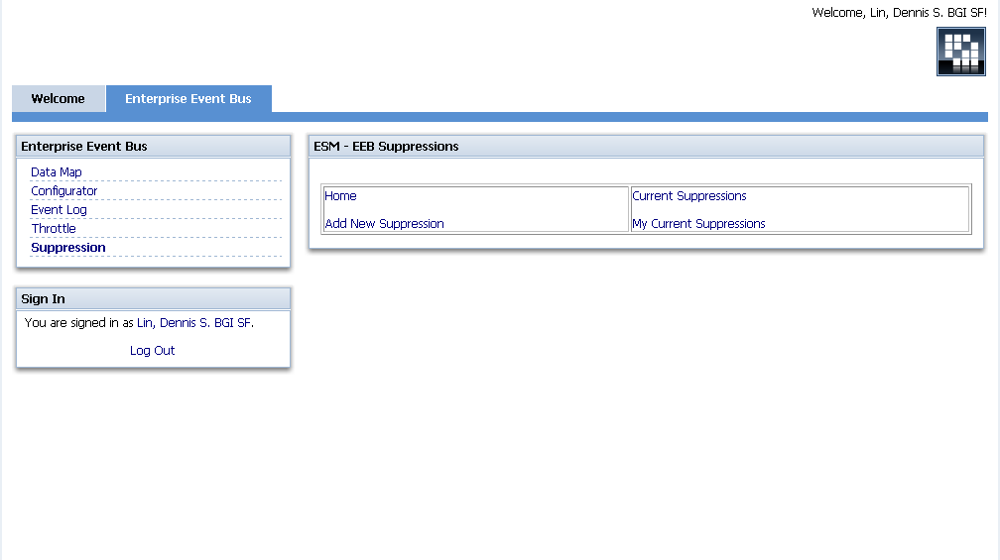

| 1. |
Go the the EEB portal and login. You should be able to login with your Windows username/password.
 |
| 2. |
Navigate to the Suppressions page.
 |
| 3. |
Click on "Add Suppression", and fill in all the pertinent information.

|